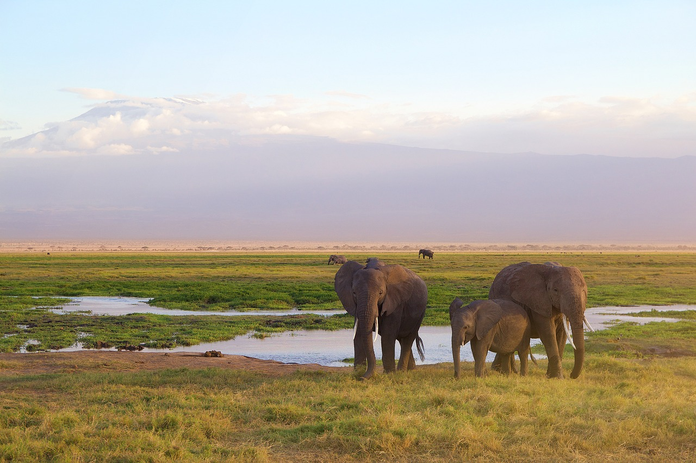

Located in southern Kenya, Amboseli National Park is famous for its stunning views of Mount Kilimanjaro, Africa’s highest peak. The park offers a diverse range of wildlife, including large herds of elephants, as well as opportunities for birdwatching, photography, and cultural experiences with the Maasai people.
The dry season (July to October) is the best time for wildlife viewing, as animals gather around water sources, and vegetation is sparse. However, Amboseli is a year-round destination, with different experiences to offer in each season.